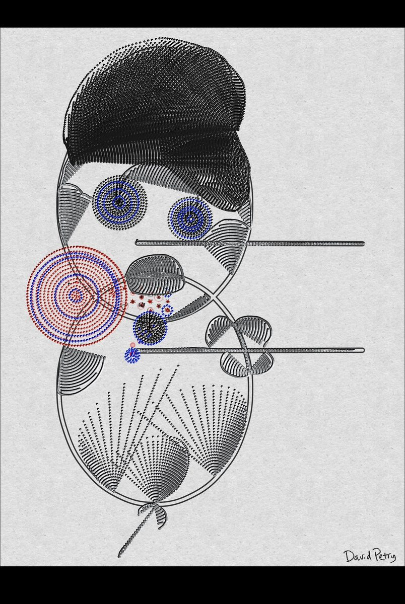

Music Life
Two decades performing, teaching, and producing — from Denver's jazz rooms to Montreux, and now the AI frontier.
Nearly 20 years
in the classroom
Individualized Instruction
Taught students across all skill levels — developing a consultative approach to identifying where a learner is, where they need to go, and how to get them there.
Curriculum Design
Built structured learning paths for David Petry Music — designing curricula that scaled across instruments, ages, and learning styles, with clear milestones and measurable outcomes.
Client Retention
Sustained a loyal client base for nearly two decades through word-of-mouth reputation alone — a direct result of teaching that actually works.
Teaching is how I think about technology
Every AI implementation is ultimately a learning problem. Twenty years of teaching taught me how to close the gap between confusion and confidence — with patience, clarity, and deep respect for where people actually are.
BS Music Education K–12 (Instrumental), Ball State University
Outstanding Graduate Student in Jazz Studies — University of Denver
Founded David Petry Music in Denver, CO
Performed at Montreux Jazz Festival (Switzerland) and North Sea Jazz Festival (Netherlands)
Closed school after nearly 20 years — relocated to Budapest, Hungary
Lived and worked in Budapest, Hungary — broadened perspective on culture, communication, and adaptability
Off Stage
A look at life and work beyond the kit — performance photos from the archive are on their way.

Denver Roots
From 1999 to 2016, Denver's music community was my professional and social home — live dates and recording sessions across jazz, funk, and club projects along the Front Range. That scene runs on the heartbeat of KUVO 89.3, the community-built jazz station broadcasting from the historic Five Points neighborhood since 1985 — a Colorado Music Hall of Fame inductee and one of the last great jazz stations in America. It's a big part of why touring artists stop in Denver, and why its jazz rooms survive.
Studio craft meets
systems thinking
My engineering background runs parallel to my performance and teaching career. Graduate studies at the Lamont School of Music included audio production alongside jazz performance — giving me both the musical and technical vocabulary of the studio.
I work in Logic Pro as my primary DAW, with experience across the full signal chain: recording, editing, mixing, arrangement, and mastering.
The overlap between audio engineering and systems engineering is real: both require precise signal flow thinking, an understanding of how components interact, and the discipline to isolate variables when something isn't working.
Logic Pro / DAW Production
Full-cycle production in Logic Pro — recording, MIDI sequencing, mixing, mastering, and sound design across multiple genres.
Audio Post-Production
Editing and finishing AI-generated audio for publication — EQ, compression, spatial processing, and final export at professional standards.
Arrangement & Composition
Deep musical theory background (jazz harmony, counterpoint, orchestration) applied to both traditional composition and AI-directed generation.
Signal Chain & Systems Thinking
Understanding how audio flows through a system maps directly to data pipelines, network architecture, and AI workflow design.
Also experimenting with Suno
Alongside the human music background above, I've also spent time since Feb. 2026 as an independent AI music producer on the Suno platform — a side practice that doubles as a real-world testbed for prompt engineering and generative AI workflow design.
Every track is a prompt engineering problem: genre, mood, instrumentation, lyrical structure, tempo, and texture all have to be encoded into language that a generative model can act on with precision.
I then perform end-to-end audio production on the AI-generated output — editing, mixing, and finishing each piece — bringing a lifetime of musical ear and studio sensibility to the human-AI creative loop.
The Suno Prompt Book
PROMPT
BOOK
A 68-page professional guide to Suno prompt engineering — style, lyrics, sliders, artifact reduction, and v5.5 platform updates. The interactive toolkit adds Suno V6. Free download.
© 2026 David Petry. Licensed under CC BY-NC-ND 4.0 — share freely with attribution, no commercial use, no derivatives.
Free Exercises
Lessons & bookings
Private percussion and music lessons, audio consultations, and session work.
Book a Session